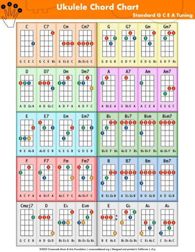
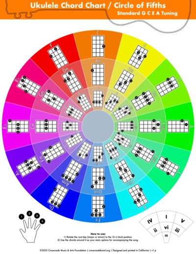
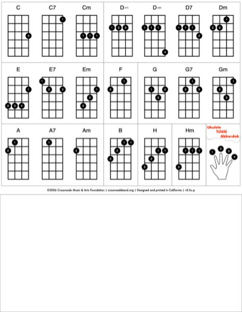
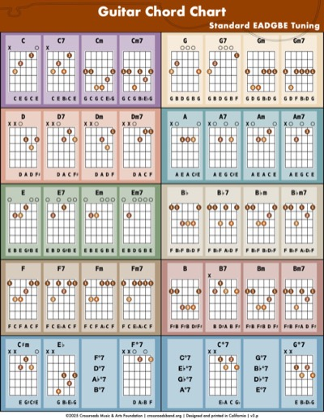
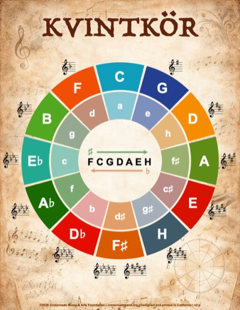
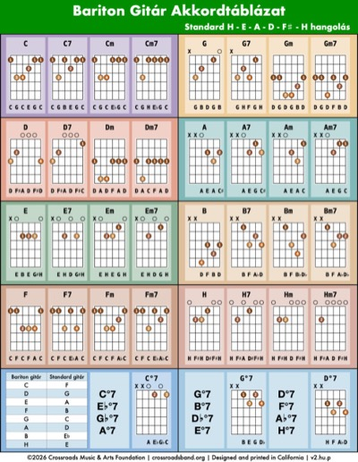
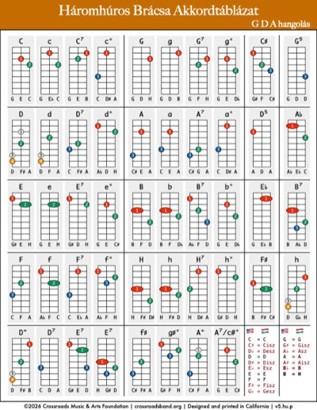
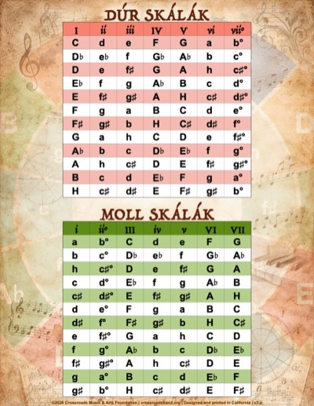

Táblázatok
Ezeket az akkordtáblázatokat kézzel készítem: egy saját, kifejezetten erre a célra írt programmal generálom őket, majd kinyomtatom és laminálom mindegyik példányt. Nem viszonteladott, tömeggyártott lapok – kis példányszámú, saját készítésű darabok. Lent kis felbontású előnézet: ukulele, gitár, bariton gitár és brácsa akkordtáblázat, a Túlélő Akkordok, plusz a Kvintkör és egy skálatáblázat.








Színes, laminált változat rendelhető: 7 USD + szállítás. Írj a hello@hungariansongbook.com címre.